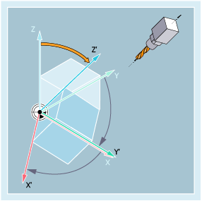

Using the commands of G group 53, the workpiece coordinate system (WCS) can be rotated so that its orientation matches the alignment of the tool or workpiece.
| TOFRAME/TOFRAMEZ/TOFRAMEY/TOFRAMEX |
| ... |
| TOROTOF |
| TOROT/TOROTZ/TOROTY/TOROTX |
| ... |
| TOROTOF |
| PAROT |
| ... |
| PAROTOF |
| Align Z axis of the WCS by rotating the frame parallel to the tool orientation All components of a previously programmed frame are deleted. | |
Alone in the block: | Yes | |
| The same as TOFRAME | |
Alone in the block: | Yes | |
| Align Y axis of the WCS by rotating the frame parallel to the tool orientation | |
Alone in the block: | Yes | |
| Align X axis of the WCS by rotating the frame parallel to the tool orientation | |
Alone in the block: | Yes | |
| Align Z axis of the WCS by rotating the frame parallel to the tool orientation The rotation defined by TOROT is the same as that defined with TOFRAME. Contrary to TOFRAME, with TOROT only the rotation components in the previously programmed frame is overwritten; all other frame components (work offsets, mirroring operations and/or scaling operations) remain unchanged. | |
Alone in the block: | Yes | |
| The same as TOROT | |
Alone in the block: | Yes | |
| Align Y axis of the WCS by rotating the frame parallel to the tool orientation | |
Alone in the block: | Yes | |
| Align X axis of the WCS by rotating the frame parallel to the tool orientation | |
Alone in the block: | Yes | |
| Deactivate orientation parallel to tool orientation | |
Alone in the block: | Yes | |
| Rotate frame to align workpiece coordinate system on workpiece | |
Alone in the block: | Yes | |
| The workpiece-referred frame rotation activated with PAROT is deactivated with PAROTOF. | |
Alone in the block: | Yes | |
| Program code | Comment |
|---|---|
| N100 G0 G53 X100 Z100 D0 | |
| N120 TOFRAME | |
| N140 G91 Z20 | ; TOFRAME is included in the calculation, all programmed geometry axis movements refer to the new coordinate system. |
| N160 X50 | |
| ... |
See also:
Frame rotation to align at the tool or workpiece (TOFRAME, TOROT, PAROT): More information
Programmable frames (overview)